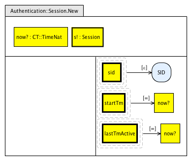
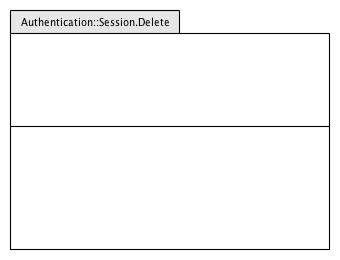
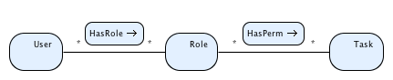
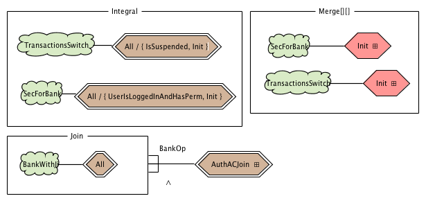

VCB Tutorial based on the Secure Simple Bank case study
This is the VCL and VCB tutorial for the Secure Simple Bank case study. This tutorial illustrates VCL's package mechanisms to support coarse-grained separation of concerns in VCL and enabling the construction of larger packages from smaller ones. The case study together with the accompanying VCL model is documented in [1]. The reader is referred to [2, 3] for an introduction to core VCL, and to [4, 5] for an explanation of VCL packages and their composition mechanisms.
The complete VCL model of this case study can be obtained from here (you can import the model into eclipse: File->Import->Existing Projects Into Workspace->Select Archive File). The sections that follow present the requirements of secure simple bank, give an overview of the VCL model, and present each package of the VCL model in detail.
Requirements of Secure Simple Bank
The secure simple bank case study extends simple bank with security concerns. The following table gives the requirements of the secure simple bank case study to be modelled in VCL.
| R1 | The bank system shall keep information of customers and their Bank accounts. A customer may hold many accounts; an account is held by one customer only. |
| R2 | A customer record comprises a customer number, a name, an address and a type (either corporate or personal). Each customer has its own unique customer number. |
| R3 | A Bank account shall have an account number, a balance indicating how much money there is in it, and its type (either current or savings). Each account has its own unique account number. |
| R4 | Accounts of type savings cannot have negative balances. |
| R5 | Customers of type corporate cannot hold savings accounts. |
| R6 | Customers may hold saving accounts provided they also hold a current account with the Bank. |
| R7 | The system shall provide an operation to create customer records. This takes as input the customer's name, address and type; the customer number is to be assigned internally by the system. |
| R8 | The system shall provide an operation to open bank accounts for some customer. This takes as input a customer number and a type of account; the account number is to be assigned internally by the system. |
| R9 | The system shall provide an operation to deposit money into a bank account. This takes as input an account number and an amount to be deposited. | R10 | The system shall provide an operation to withdraw money from some bank account. This takes as input an account number and an amount to be withdrawn. |
| R11 | The system shall provide an operation to view the balance of some bank account. This takes as input an account number and outputs the account's balance. | R12 | The system shall provide an operation to obtain a list of all accounts of some customer. This takes as input a customer number and outputs the set of accounts numbers corresponding to accounts held in the bank by the customer. | R13 | The system shall provide an operation to view a list of all accounts that are in debt in the bank. This outputs the set of accounts numbers corresponding to accounts held in the bank that are in debt. | R14 | The system shall provide an operation to delete accounts from the system. This takes as an input the number of the account to be deleted. A bank account may be deleted provided its balance is 0. | R15 | Users have to authenticate themselves prior to opening a system session (login), which needs to be closed when they no longer need the system's services (logout). | R16 | Users have their access to the system suspended if they miss a password for three consecutive times. | R17 | There are two kinds of users: clerks and managers. Managers can execute create customer records, open accounts and delete accounts. Clerks can execute deposit and withdraw. Both managers and clerks can execute get balance, get customer accounts and get accounts in debt. | R18 | A system service or operation may be used provided users have an open session and they have the required permissions to execute task. | R19 | The system shall provide a functionality to suspend transactions for security reasons. If transactions are suspended, no deposits and withdrawals are allowed. The system shall allow transactions to be resumed once they have been suspended. |
Overview of VCL model
The VCL model of secure simple bank comprises a total of 13 packages. They are as follows:
The package SecBank represents the overall Secure Simple Bank system. The package Bank represents the domain concern of banking; Authentication represents the core of the authentication security concern; AccessControl represents the access control security concern
The following sections give step by step instructions on how to build the VCL packages shown above, and how to generate Z specifications from them.
Launching VCB and starting a new VCL model
- Install VCB, if you have not already done so. Installation instructions are available here.
- Launch Eclipse. Start a new VCL model by creating a new Eclipse project. From the File menu, select the option New/Project...; under the tab General, select Project and press the Next button.
- In the New Project dialog, give the name SecBank to the project. Press the button Finish to create the project.
Package CommonTypes
We need to create the package CommonTypes. This is as follows:- From the the File menu, select the option New/Other...; under the tab Visual Contract Language, select New VCL Package option and press Next.
- Enter CommonTypes for the package name and press Finish.
- This will result in the creation of three diagrams: a package diagram ('CommonTypes.vclpd'), a structural diagram ('CommonTypes.vclsd') and a behaviour diagram ('CommonTypes.vclbd'). Open the package diagram by double-clicking its file in the Package Explorer.
- The package diagram identifies the current package CommonTypes (current package is bold-lined). By default, a container package is created (container packages have their name written in italics). This is fine; CommonTypes is a container package.
- We now open the structural diagram by double-cliking on its file from Eclipse's Package Explorer (file 'CommonTypes.vclsd'). Select the primary blob item from the pallete add click on the canvas to create a primary blob; name it Name. This defines a set of names.
- This concludes the definition of the package CommonTypes.
Package Bank
To create the package Bank follow the tutorial of the simple bank case study. There are two differences:- The package Bank must extend (include inside) the package CommonTypes in the package diagram.
- The blob Name must have the Is imported property set to true (the symbol ↑ shows up) because it is imported from CommonTypes.
- The remaining diagrams of package Bank are as in the simple bank case study.
Package Authentication
We now create the package Authentication, which describes in VCL the core of the authentication concern.
- Create a new package and name it Authentication. On the package diagram, select the current package and change its kind on the properties window from Container to Ensemble. Select the package item from the Palette, and place it inside the package Authentication, name it CommonTypes.
- Create the package's SD. It is as follows:
- There are two class sets, User and Session, with a relation edge named HasSession relating them; a user may have a session and a session must be associated with a user.
- Set User has properties name (of reference set Name), uid (of set UID), pw (of set Password), pwMisses (of primitive set Nat) and status of set UserStatus (an enumerated set with values loggedIn, blocked and loggedOut). User also has local constant maxPwMisses of type Nat and the local invariant MaxPwMissesInv.
- Set Session has properties sid of set SID, and startTm and lastTmActive of reference set TimeNat.
- Create a global invariant with name HasSessionIffLoggedIn.
- Create the definition set LoginResult, which defines an enumeration containing the values loginOk, isBlocked and wrongPw. Set LoginResult gives the result of a login operation.
- Double-click on the local invariant MaxPwMissesInv to define it. The invariant says that the property pwMisses must be less or equal than the constant maxPwMisses.
- Double-click on the global invariant HasSessionIffLoggedIn to define it. This says that if a user is logged-in then he/she must have a session.
- BD of package Authentication defines the following operations:
- For set Session, the update operations New and Delete.
- For set User, the observe operation IsLoggedIn, and the update operations LoginOk, LoginNotOk and Logout
- Several global operations: the queries UserIsLoggedIn and GetUserGivenUID, and the update operations Login and Logout.
- Double-click on each operation to define them. The ADs and CDs that define them are as follows:



Package AccessControl
We now create the VCL package AccessControl, which isolates the access control concern.
- Create a new package and name it AccessControl. Set its kind to Ensemble.
- Open the package's SD. Create three value blobs: User, Role and Task. Create a relation-edge between User and Role; call it HasRole. Create another relation-edge between Role and Task; call it HasPerm.
- The package's BD contains a single observe operation.
- Definition of operation UserHasPerm involves two ADs:
- Create a new package and name it AccessControl. Set its kind to Ensemble. Put two packages inside the current package: Authentication (give it the alias AU) and AcessControl (give it the alias AC). Create an overrides dependency from the package Authentication to the package AcessControl. You need to say which blobs are being overriden; in the properties window, in the Names field, enter User. This says that Authentication overrides the blob User in AcessControl.
- The BD introduces a single operation: UserLoggedInAndHasPerm.
- The AD that defines the operation UserLoggedInAndHasPerm puts together in a single operation, the operation UserHasPerm from Authentication and the operation UserIsLoggedIn from AccessControl.
- Create a new package and name it RolesAndTasksBank. This is a container package so no need to change its kind in the PD.
- Open the package's SD. This package is made of two primitive blobs, Role and Task, and two derived blob, ManagerTasks and ClerkTasks. They are as follows:
- Create a new package and name it SecForBank. In the package diagram, change the kind of the current package to ensemble (in the properties window). Put two packages inside the current package: Authorisation and RolesAndTasksBank. Create an overrides dependency from the package RolesAndTasksBank to the package Authorisation. You need to say which blobs are being overriden; in the properties window, in the Names field, enter Role and Task. This says that RolesAndTasksBank overrides blobs Role and Task in Authorisation.
- Open the package's SD. Introduce a reference to the constant maxPwMisses of blob User defined in package Authentication. Introduce a definition edge to define the value of the constant through an assertion diagram.
- Double-click on the constant's definition AD. In the predicate, say that the constant must bne equal to 3.
- Open the package's BD. Introduce an assertion named Init to represent the package's initialisation. Then introduce an integral extension that says that all operations of package Authorisation are to be part of package SecForBank
- Double-click on the assertion named Init on the BD. This defines the initial value of the relation-edge HasPerm. It says that the rôle Clerk has permission to excute all tasks defined in blob ClerkTasks and that the rôle Manager can execute all tasks defined in blob ManagerTasks.
- Create a new package and name it TransactionsSwitch. In the package diagram, change the kind of the current package to ensemble (in the properties window).
- Open the package's SD. Introduce a package blob called TransactionsSwitch with one property edge called suspended of type blob OnOff (an enumerated blob with values On and Off).
- Open the package's BD. This includes an assertion Init to define the package's initialisation; two update operations: TransactionsOn and TransactionsOff; and one observe operation: IsSuspended.
- The AD of the package's initialisation sets the suspended property of the package blob to Off. This says that initially the transactions are not suspended.
- The operations TransactionsOn and TransactionsOff simply switch the value of the suspended property to On or Off.
- The observe operation IsSuspended encapsulates a predicate that indicates whether the transactions are suspended or not.
- Create a new package and name it BankWithTransSwitch. In the package diagram, change the kind of the current package to ensemble (in the properties window). Put two packages inside the current package: Bank and TransactionsSwitch (set alias to TS).
- Open the package's BD. Introduce one integral extension for the package bank, but excluding the operations AccWithdraw and AccDeposit. Create one Join Box and place the operations AccWithdraw and AccDeposit of package Bank inside the box. Then create a join contract and name it TransSwitchOp.
- The contract TransSwitchOp references the IsSuspended query from the package TransactionsSwitch and negates it, and then includes the reference to the opeartion that is the target of the join (TransOp).
- Create a new package and name it BankACJI. In the package diagram, change the kind of the current package to ensemble (in the properties window). Put two packages inside the current package: Bank and TransactionsSwitch (set alias to TS).
- Open the package's BD. Create the following BD.
- Define each operation of the BD. The VCL operation definitions are as follows.
- Create a new package and name it BankWithJI. In the package diagram, change the kind of the current package to ensemble (in the properties window). Put two packages inside the current package: BankACJI (set alias to BJI) and BankWithTransSwitch (set alias to B).
- Open the package's BD. Create the a merge box. Inside the merge box place the package BankACJI and connect it with an edge to an All contract. Do the same for the package BankWithTransSwitch.
- Create a new package and name it SecBank. In the package diagram, change the kind of the current package to ensemble (in the properties window). Put the following packages inside the current package: SecForBank (set alias to SFB), AuthenticationOps, BankWithJI (set alias to B), and TransactionsSwitch.
- Open the package's BD. Create two integral extensions for packages TransactionsSwitch (excluding operation IsSuspended) and AuthenticationOps. Create a join box. Inside the jon box, place the package BankWithJI and connect it with an edge to an All contract. Attach the join contract AuthACJoin to the join box.
- Define the join contract by double-clicking on AuthACJoin. The definition of this join contract is as follows:
- Nuno Amálio. The VCL model of secure simple Bank. Technical Report TR-11-10. Univ. of Luxembourg, LASSY. 2011.
- Nuno Amálio, Pierre Kelsen. Modular Design by Contract Visually and Formally using VCL. In VL/HCC 2010. IEEE. 2010.
- Nuno Amálio, Pierre Kelsen, Qin Ma. Specifying structural properties and their constraints formally, visually and modularly using VCL. In EMMSAD 2010: 261-273. LNBIP 50. Springer. 2010.
- Nuno Amálio, Pierre Kelsen. The visual contract language: abstract modelling of software systems visually, formally and modularly Technical Report TR-10-03. Univ. of Luxembourg, LASSY. 2010.
- Nuno Amálio, Pierre Kelsen, Qin Ma, Christian Glodt. Using VCL as an Aspect-Oriented Approach to Requirements Modelling. In Transactions on Aspect-Oriented Software Development 7: 151-199. Springer. 2010.

Package Authorisation
We now create the package Authorisation, which puts together the concerns of authentication and access control.
Package RolesAndTasksBank
We now create the package RolesAndTasksBank, which defines a set of roles and tasks for the purpose of secure simple bank system. These are used to enfore access control.
Package SecForBank
We now create the package SecForBank, which customises Authorisation for the purpose of the secure simple bank system.
Package TransactionsSwitch
We now create the package TransactionsSwitch, which enables users to turn on and off the transactions at the bank for security reasons.
Package BankWithTransSwitch
We now create the package BankWithTransSwitch, which equips the domain package Bank with the transactions switch functionality of package TransactionsSwitch.
Package BankACJI
We now create the package BankACJI (Bank Access Control Join Interface), which extends the package RolesAndTasksBank.

Package BankWithJI
We now create the package BankWithJI (Bank with join interfaces), which extends the packages BankACJI and BankWithTransSwitch.
Package SecBank
We now create the package SecBank, which is the package that represents the overall secure simple bank system. SecBank extends packages SecForBank, AuthenticationOps, BankWithJI and TransactionsSwitch.
